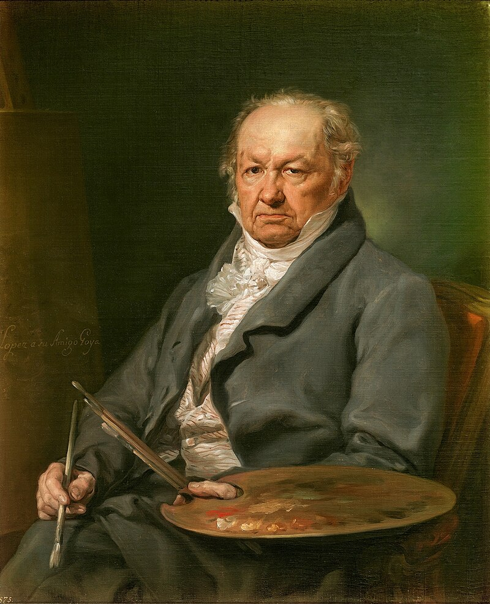

Francisco de Goya  — Zaragoza, 1746 / Bordeaux, 1818 — considered the father of contemporary art, also known for having a great vision of the artistic movements emerging across the continent, from Romanticism to Surrealism, passing through Impressionism and Expressionism.